SRS Well-Be Care App: Alzheimer Patient Monitoring Specification
Dokumentasi portfolio profesional dan detail analisis sistem.
1.1. Purpose & Tujuan Penulisan
Tujuan utama penyusunan dokumen SRS Well-Be Application untuk perawatan Alzheimer.
Ringkasan Keseluruhan Aplikasi
Aplikasi Well-Be adalah inovasi teknologi yang proaktif untuk memantau lansia penderita demensia, Alzheimer, dan penurunan daya ingat. Aplikasi ini memiliki fitur penunjang kualitas hidup pasien dan mengurangi beban kerja perawat/keluarga, seperti fitur Linimasa momen hangat lansia dan monitoring pelacak GPS secara real-time.
Audiens Utama
Dokumen ini ditujukan bagi Product Manager, Developers, Insinyur QA, Ahli Hukum Kesehatan, serta tim perancang perangkat medis untuk memastikan kepatuhan regulasi dan standar kualitas.
1.2. Product Scope & Operating Environment
Definisi cakupan produk, batas operasional, serta batasan umum pengembangan.
Cakupan Sistem
Pelacakan lokasi real-time dengan GPS, sinkronisasi jam pintar, perekaman data kesehatan dasar, dan manajemen kenangan/moments terpadu.
Lingkungan Operasional
Aplikasi mobile berjalan pada Android 8.0 (Oreo)+ dan iOS 12.0+ dengan koneksi internet konstan dan integrasi GPS internal.
Evaluasi Kualitas Hidup
Pengumpulan data aktivitas fisik harian, pola tidur, dan perilaku kognitif subjektif guna mengurangi stres perawat (Caregiver Burden).
1.3. Definitions, Acronyms, and Abbreviations
Glosarium istilah teknis yang digunakan di dalam dokumen.
| Istilah/Akronim | Definisi Lengkap |
|---|---|
| SRS | Software Requirements Specifications: Dokumen spesifikasi kebutuhan sistem. |
| GPS | Global Positioning System: Sistem berbasis satelit untuk penentuan koordinat lokasi geografis. |
| Caregiver | Pengasuh atau wali yang bertanggung jawab penuh merawat pasien demensia sehari-hari. |
| Geofencing | Batas perimeter geografis virtual yang jika dilanggar akan mengirimkan alarm ke perawat. |
2.1. Product Perspective (Arsitektur Sistem)
Diagram visual perspektif produk yang menunjukkan arsitektur dari aplikasi Well-Be.
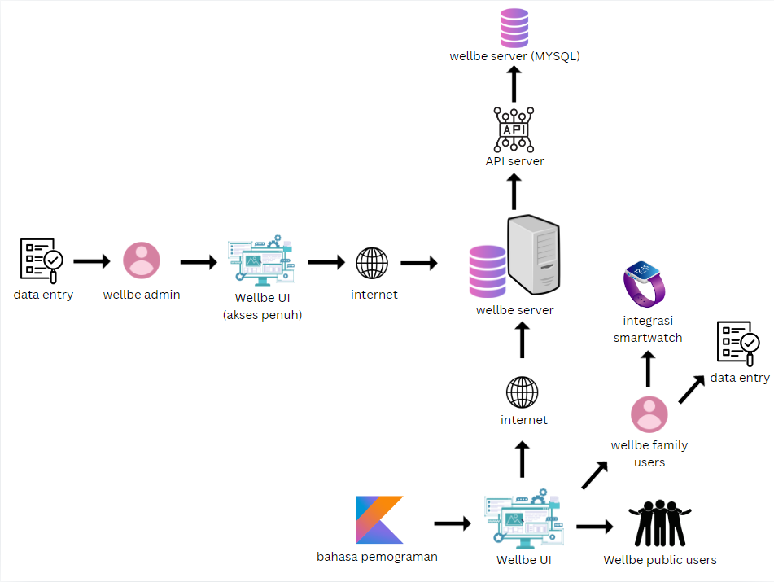
2.2. Use Case Specifications
Diagram fungsional sistem dan penjelasan rinci interaksi aktor.
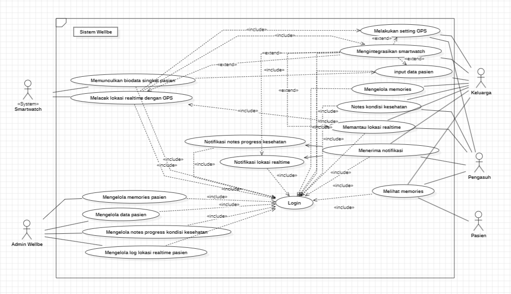
Detail Spesifikasi Use Case Kunci:
| Fitur / Use Case | Aktor Utama | Prasyarat (Precondition) | Alur Utama (Basic Path) |
|---|---|---|---|
| Melacak Lokasi dengan GPS | Keluarga, Pengasuh, Smartwatch | Smartwatch terpasang di pergelangan tangan pasien dan terhubung ke GPS aktif. | 1. Smartwatch mengirim koordinat ke server. 2. Aplikasi perawat mengambil data real-time. 3. Peta menampilkan penanda lokasi pasien. |
| Mengelola Memories (Linimasa) | Pasien, Keluarga, Pengasuh | Pengguna telah login dan memiliki hak akses ke modul kenangan pasien. | 1. Aktor mengunggah foto/catatan momen bahagia. 2. Sistem memberi stempel waktu otomatis. 3. Momen ditampilkan berurutan di linimasa. |
| Pencatatan Catatan Kesehatan | Pengasuh, Keluarga, Admin | Akses modul kesehatan diaktifkan untuk akun perawat. | 1. Perawat mencatat asupan obat, waktu tidur, atau insiden. 2. Data disimpan ke server Cloud secara aman. |
2.3. Non-Functional Requirements
Persyaratan kualitas non-fungsional berdasarkan standar kualitas ISO/IEC 25010.
| Dimensi Kualitas | Deskripsi Spesifikasi Kebutuhan |
|---|---|
| Functional Suitability | Keakuratan lokasi koordinat GPS berada di bawah toleransi selisih 5 meter. Kelengkapan fitur pelacakan, linimasa, dan alarm darurat wajib terpenuhi 100%. |
| Performance Efficiency | SLA waktu respon pengambilan data lokasi ke peta maksimal 5 detik pada koneksi internet seluler selambat 4G/LTE. |
| Compatibility | Mampu diinstal pada Android 8.0+ dan iOS 12.0+ serta kompatibel dengan Apple Watch dan WearOS Smartwatches. |
| Security & Privacy | Enkripsi data pribadi pasien (PII) saat diam (at rest) dan berpindah (in transit) menggunakan cipher enkripsi AES-256 dan protokol SSL/TLS. |
2.4. User Classes and Characteristics
Segmentasi karakteristik pengguna akhir aplikasi Well-Be.
1. Administrator
Memiliki literasi IT tinggi, bertugas memantau server, mengelola database pengguna, mengekspor laporan bulanan, dan audit log keamanan.
2. Pengasuh (Caregiver)
Mempunyai pemahaman dasar aplikasi mobile, memantau pergerakan lansia secara harian, dan menerima alarm geofencing.
3. Pasien & Keluarga
Keluarga mengakses info medis, mengelola dokumen memori pasien. Lansia (pasien) berinteraksi dengan visual sederhana (satu-klik) pada smartwatch.
2.5. Design and Implementation Constraints
Aturan dan batasan teknis yang mengikat arsitektur desain perangkat lunak.
Regulatory & Security Compliance
Aplikasi wajib mematuhi standar kerahasiaan data rekam medis pasien sesuai UU Pelindungan Data Pribadi (UU PDP) serta regulasi internasional medis seperti GDPR / HIPAA untuk ekspor data medis eksternal.
Hardware Constraints
Aplikasi Smartwatch harus hemat daya agar tidak menghabiskan baterai pelacak dalam waktu kurang dari 24 jam pengoperasian aktif.
2.6. Assumptions and Dependencies
Faktor asumsi eksternal dan ketergantungan sistem.
| Asumsi Pengembangan | Ketergantungan Sistem (Dependencies) |
|---|---|
| Pengguna perawat memiliki smartphone pribadi yang terhubung dengan paket data internet aktif. | Sistem bergantung pada API Google Maps / Apple Maps untuk me-render peta geofencing secara visual. |
| Literasi teknologi keluarga cukup untuk melakukan setup integrasi bluetooth smartwatch mandiri. | Kompatibilitas dipengaruhi oleh pembaharuan patch keamanan OS Android/iOS pihak ketiga. |
2.7. Data Flow Diagram (DFD)
Detail aliran data transaksi sistem Well-Be untuk Level 0, Level 1, dan Level 2.
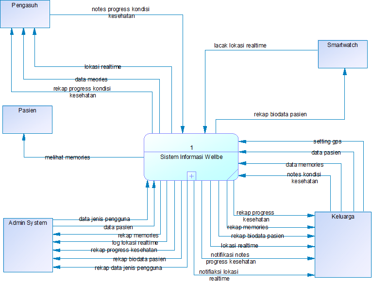
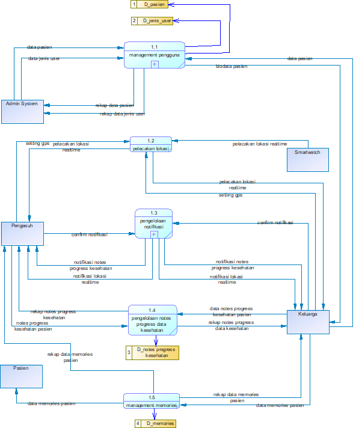
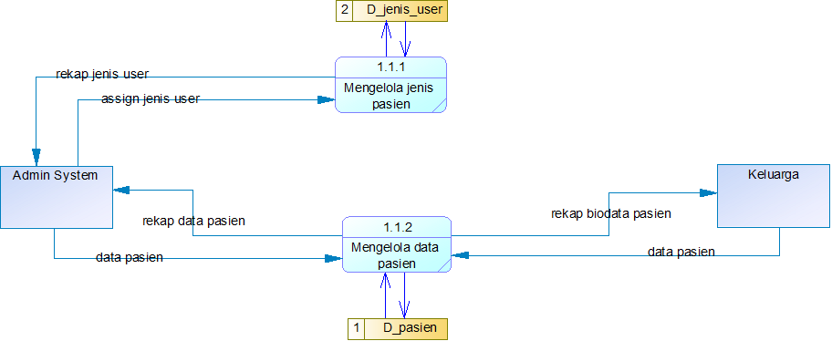
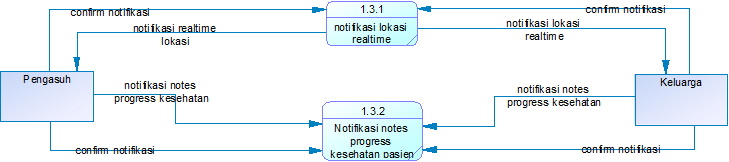
2.8. CDM & PDM Schema
Skema konseptual (CDM) dan fisikal (PDM) relasi database sistem.
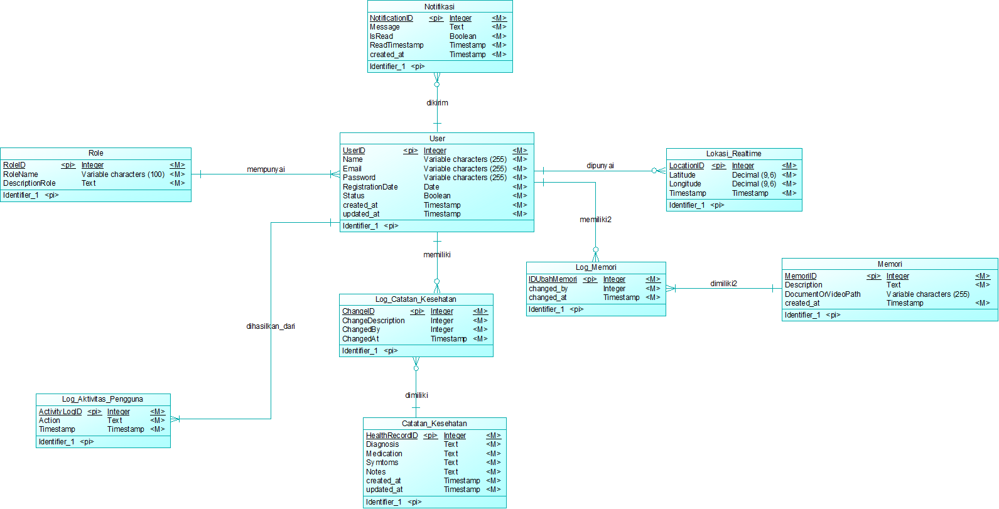
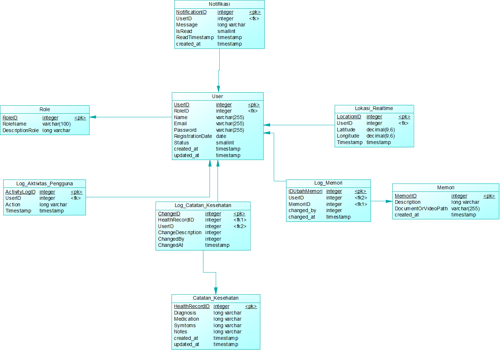
2.9. Sequence Diagrams
Urunan diagram sekuensial interaksi aktor dan sistem dalam runtime.
Sekuens Admin:
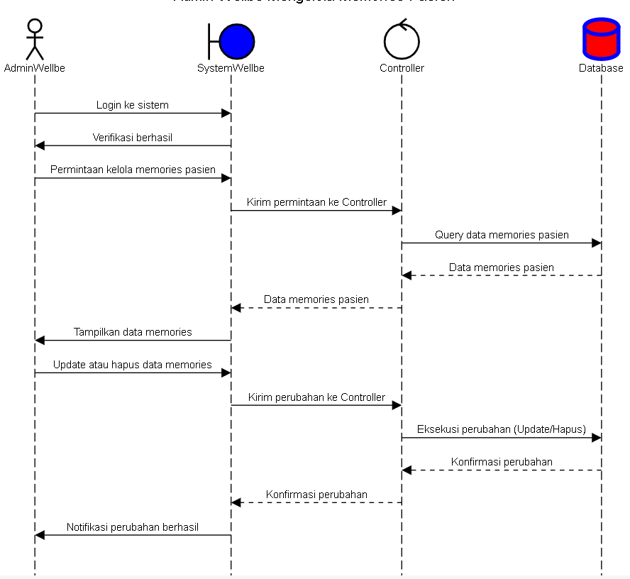
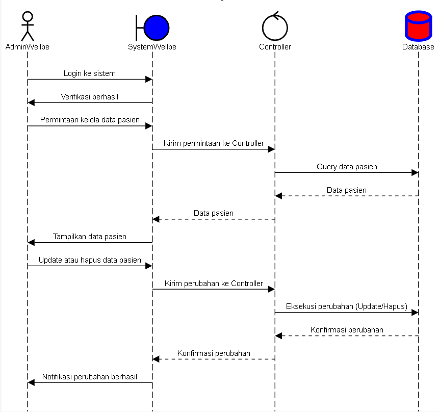
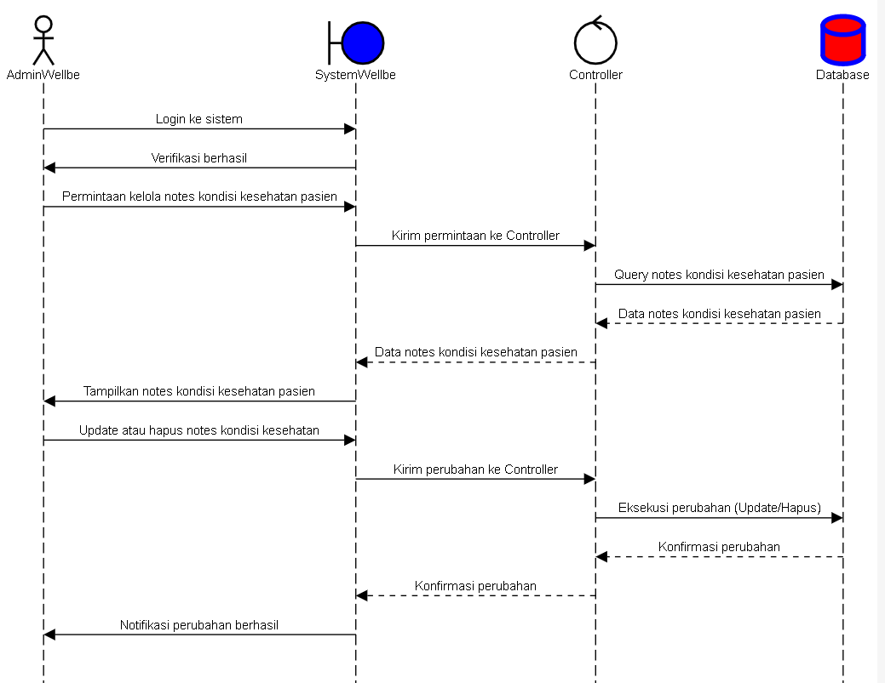
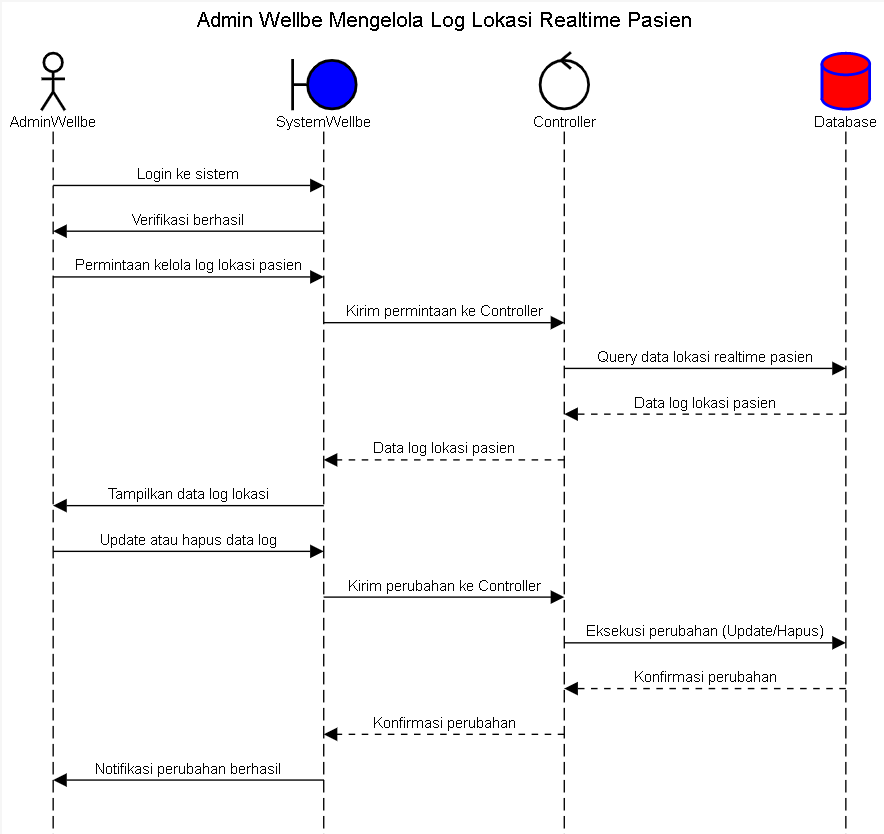
Sekuens Keluarga:
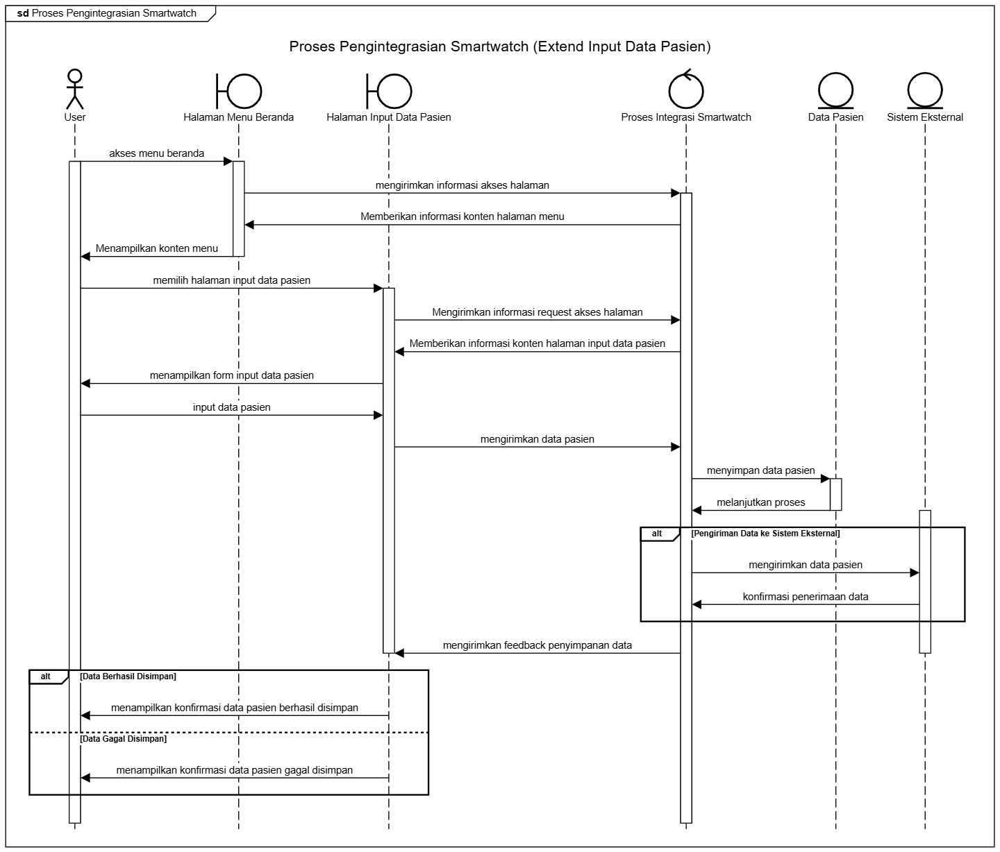
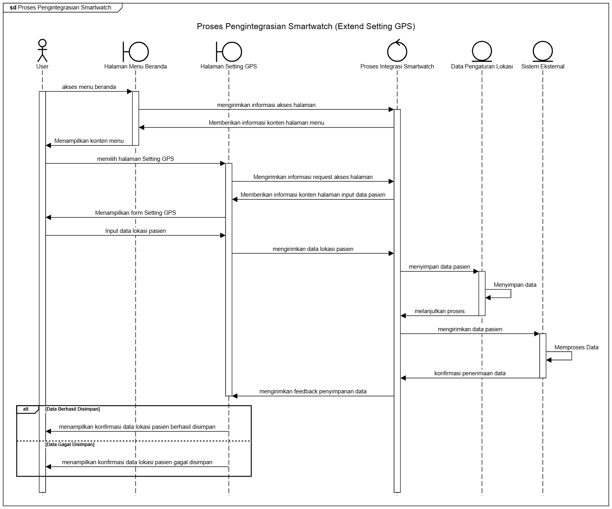
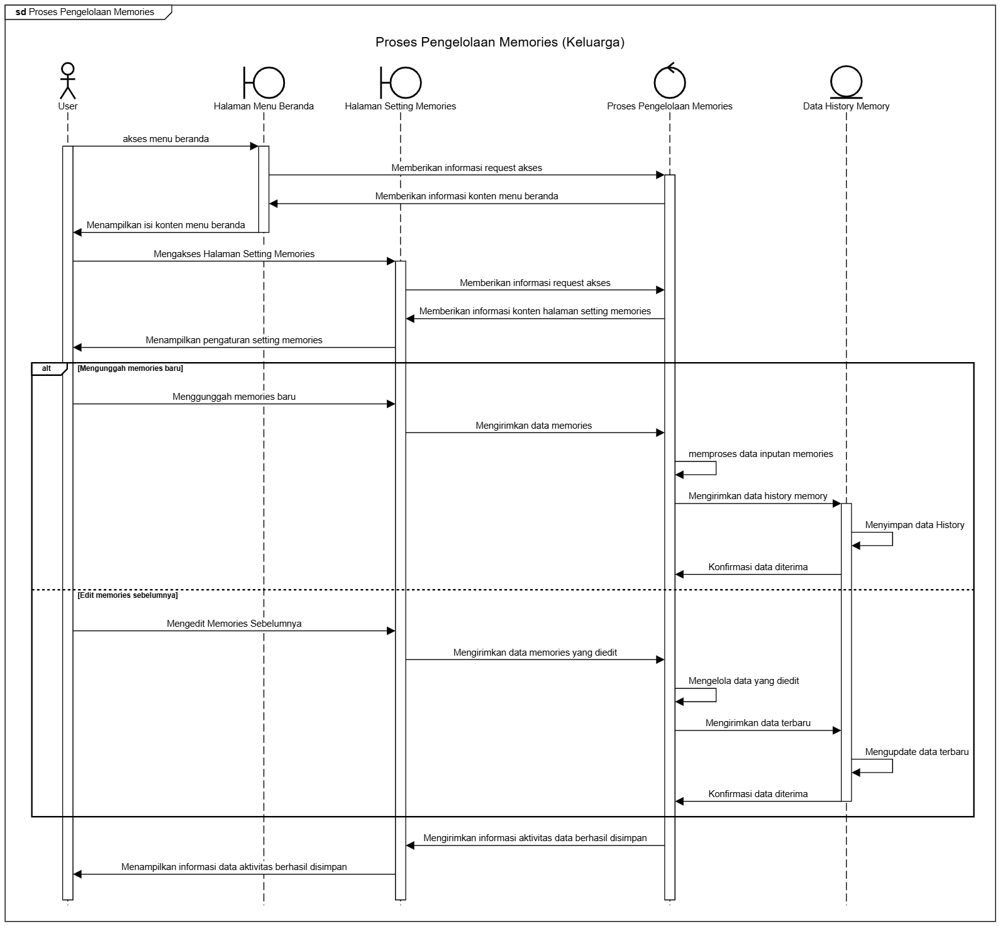
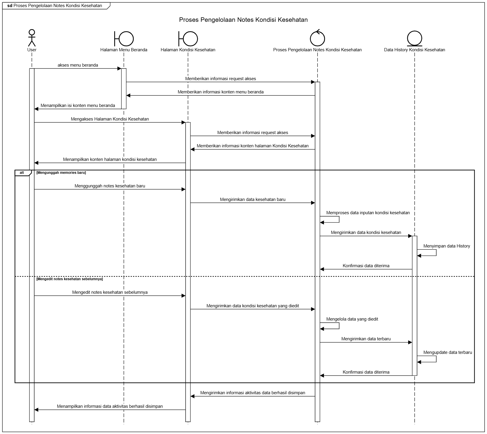
Sekuens Pengasuh, Pasien, & Smartwatch:

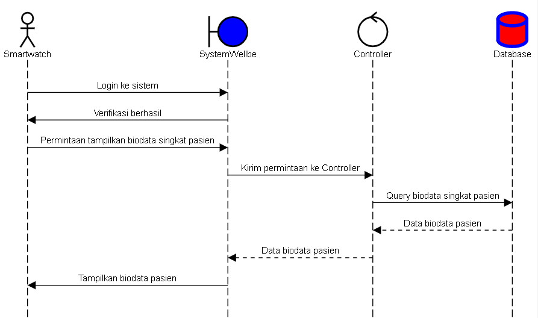
2.10. User Stories & Scenarios
Skenario penggunaan sistem oleh berbagai peran pengguna.
| Peran Pengguna | Kebutuhan User Story | Skenario Kasus Uji |
|---|---|---|
| Pengasuh (Caregiver) | "Saya ingin memantau keberadaan pasien saya dengan real-time agar bisa merespon cepat jika berada di area berbahaya." | 1. Pengguna login. 2. Buka modul pelacakan. 3. Sistem memperbarui titik koordinat pasien otomatis. |
| Keluarga | "Saya ingin mengunggah dan melihat momen indah pasien pada linimasa untuk membantunya mengingat memori penting." | 1. Buka menu linimasa. 2. Klik unggah gambar kenangan. 3. Gambar masuk ke katalog memories. |
Akses Figma Desain Antarmuka:
Buka Link Desain Figma GUI →